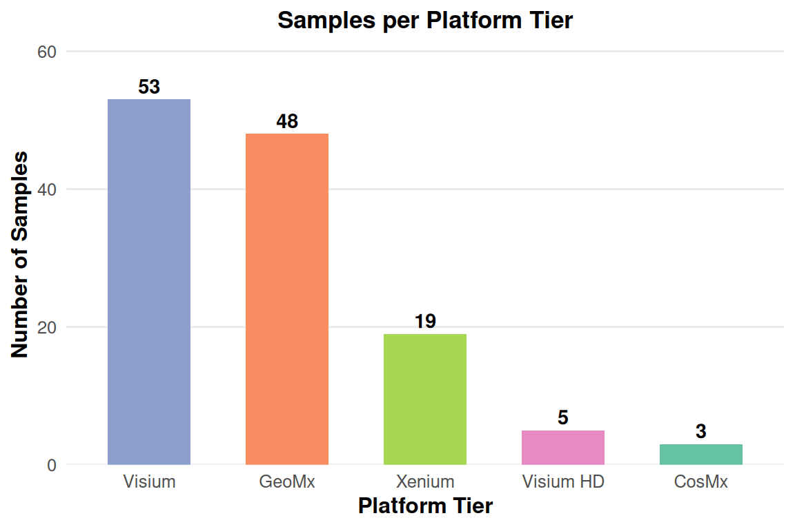
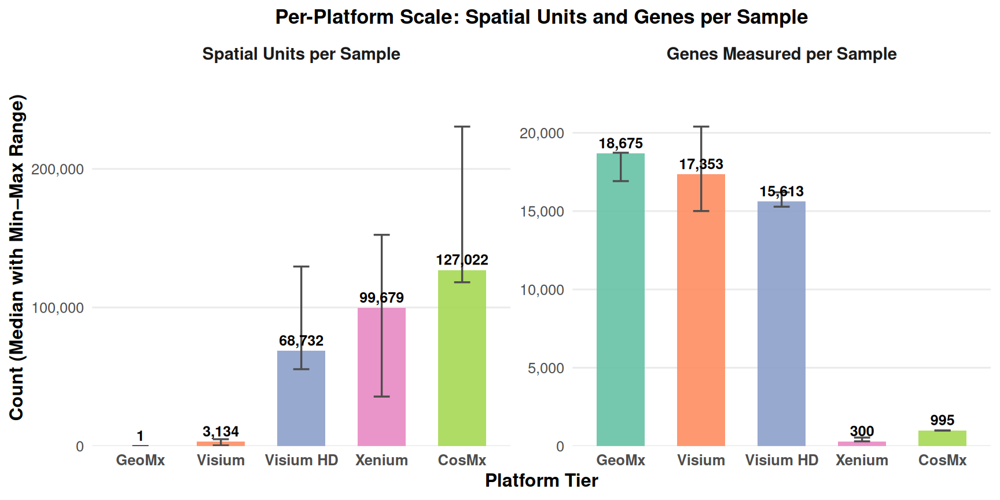
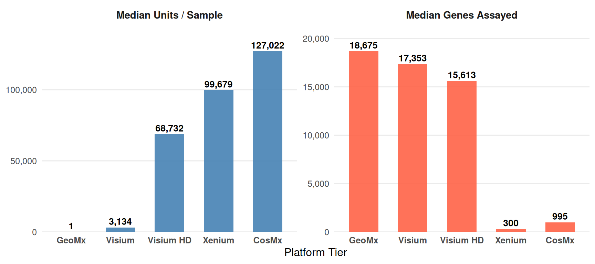
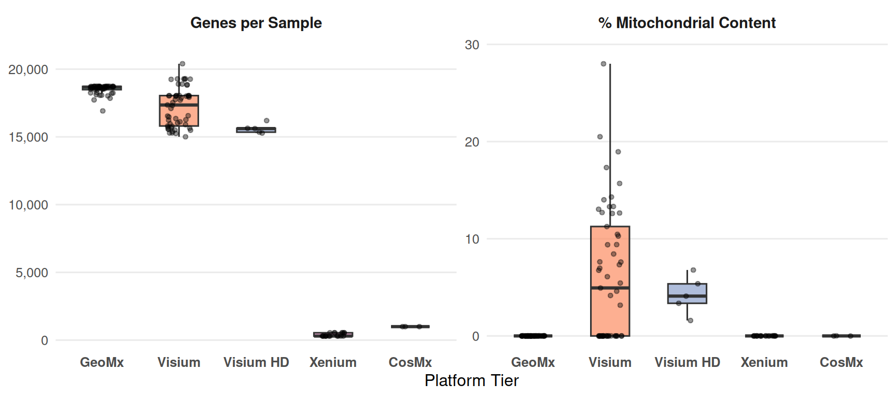

The emergence of spatial transcriptomics promised to restore the architectural context lost in single-cell dissociation studies, triggering a rapid proliferation of experimental modalities. Today, the field does not rely on a single technical standard, but operates across a spectrum of physical paradigms—ranging from targeted region-of-interest sequencing (GeoMx) and multi-cellular capture arrays (Visium) to sub-cellular imaging modalities (Xenium, CosMx) and high-density binning technologies (Visium HD). Each framework negotiates distinct trade-offs among transcriptomic depth, spatial capture efficiency, optical segmentation fidelity, and tissue throughput.
As spatial datasets rapidly accumulate within nephrology, a foundational question requires rigorous evaluation: to what extent do current spatial technologies capture authentic single-cell biology versus complex spatial mixtures and technical noise? Navigating this landscape requires an overarching, critical audit of empirical data quality across platforms and tissue contexts. By surveying a consolidated cohort across diverse renal disease and developmental models, this work establishes the empirical boundaries, platform-specific biases, and effective resolution limits of current spatial data—laying a principled baseline before undertaking downstream biological modeling.
| study | tier | species | n |
|---|---|---|---|
| ANCA-vasculitis | visium | human | 3 |
| CAMR-GeoMx | geomx | human | 48 |
| CAMR-scRNA-VisiumHD | visium_hd | human | 1 |
| DKD-HIF-SGLT2i | visium_hd | human | 4 |
| DKD-MEF2C | visium | human | 12 |
| EPO-cell-neighborhood | visium | mouse | 12 |
| human-kidney-dev | cosmx | human | 3 |
| hypertensive-nephropathy | visium | human | 4 |
| hyperuricemia-mouse | visium | mouse | 4 |
| kidney-PT-regen | visium | human | 3 |
| kidney-repair-matrix | visium | mouse | 1 |
| kidney-transplant-rejection | xenium | mouse | 7 |
| lupus-nephritis-mouse | visium | mouse | 4 |
| mouse-IRI-repair | visium | mouse | 6 |
| mouse-IRI-repair | xenium | mouse | 12 |
| transplant-rejection-FCGR3A | visium | human | 4 |
The cohort is 128 samples across 15 studies. Five platforms are represented:

GeoMx (48): region-of-interest profiles, 48 samples, one ROI each, all from a single kidney-transplant cohort (chronic active antibody-mediated rejection / CAMR).
Visium (53): whole-transcriptome spot arrays across ten studies.
Xenium (19): single-cell imaging across two mouse cohorts, a 12-sample ischemia-reperfusion time course and a 7-sample kidney-transplant-rejection cohort.
Visium HD (5): bin-resolution whole transcriptome from diabetic kidney disease (4) and one transplant sample.
CosMx (3): single-cell imaging of human fetal kidneys at three gestational ages.
The studies themselves, read plainly as data descriptors, span human and mouse, development and disease: human fetal kidney development (CosMx, weeks 15–19), mouse ischemia-reperfusion injury (Xenium + Visium, sham through 6 weeks), mouse kidney transplant rejection (Xenium), chronic antibody-mediated transplant rejection (GeoMx), diabetic kidney disease (Visium + Visium HD), ANCA-associated vasculitis (Visium), lupus nephritis (Visium), hypertensive nephropathy (Visium), hyperuricemia (Visium), erythropoietin-producing cell neighborhoods (Visium), and proximal-tubule regeneration (Visium). This is a heterogeneous collection of kidney biology, which is exactly what makes it useful: the biology has to survive that heterogeneity to be believed.

The five platforms differ by three orders of magnitude in the size of what they measure.
GeoMx measures one region per sample at ~17,000–19,000 probes;
Visium measures ~400–5,000 spots at 15,000–19,000 genes;
Visium HD measures 55,000–130,000 bins at ~15,000 genes;
Xenium measures 36,000–152,000 cells at 300–541 genes;
CosMx measures 118,000–230,000 cells at 995 genes.
The units are not the same kind of thing: a region, a mixture of cells, a partial cell, or a single cell. Every analysis that follows has to respect that.

The five platforms span orders of magnitude in unit size and sixty-fold in gene coverage. That is the single fact the rest of this analysis is built around.
Quality varies with platform in the way the physics predicts. Imaging platforms (Xenium, CosMx) detect 35–211 median genes per cell, because a panel is limited and a single cell is sparse. Spot platforms (Visium) detect 54–10,000 median genes per spot (a spot is a mixture, so it is richer). Visium HD bins sit between: 42–129 median genes per bin.

The mitochondrial fraction needs an explanation before it can be read
correctly. I recomputed pct_mito per sample directly from the raw
counts, and the pattern is a property of each reference annotation:
human whole-transcriptome sections carry the MT-
mitochondrial genes and show real values (mean ≈ 3%, up to 28%
on disease samples), the standard sequencing-era quality flag,
tracked per sample. Imaging platforms (Xenium, CosMx) and the mouse
sections whose reference annotation carries no mt- genes
show 0, with a per-sample note: the value is not a
biological statement of zero mitochondrial content but a statement that
the reference does not measure it. I report the distinction rather than
either a misleading zero or a fabricated number.
These per-sample statistics were all recomputed during ingestion rather than taken from the source files. Each sample runs through its own Docker-contained processing script that reads the original count matrix, computes per-unit QC (median genes, median counts, mitochondrial fraction) from the raw counts, and writes a QC record beside the cleaned matrix. I recompute rather than trust because a QC flag is only as useful as the data it is computed from, and recomputing from the raw matrix guarantees one consistent definition across all 128 samples.
The heterogeneity of the data is the first fact to respect. A single-cell analysis on Xenium is a different measurement than a spot analysis on Visium, which is different again from a region profile on GeoMx. They are all kidney biology, but they are not interchangeable, and no analysis that pretends otherwise will hold up against the data.
One more thing
Each of the 128 samples passed the ingest QC gate of the processing
pipeline (flagged qc_pass). That does not mean every sample
is perfect, but every sample was usable enough to carry forward. The
specific weaknesses (sparse cells, high-mitochondrial spots,
low-resolution images) are documented per sample and will matter at
specific steps.